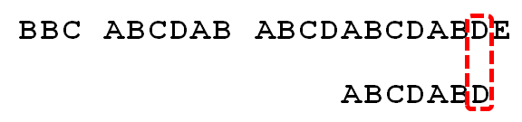

KMP的由来
在KMP算法之前,对文本进行匹配时使用的是朴素模式匹配算法,也就是最简单匹配算法.
当然运行效率也是让人深恶痛绝,举个例子:
现有长度为n的模式串00001,和长度为m的文本串0000000000000000000000000000000001.
按照朴素匹配算法最终时间复杂度为o{(m-n+1)*n}
这种有多个0和1重复字符的字符串,匹配模式却仍需要挨个遍历,这是十分糟糕的,所以最终KMP算法诞生了.
KMP和朴素算法的核心差别
朴素算法在匹配时,子串和对比的目标串都会不断的进行回溯对比,而KMP会先计算出子串的匹配数组,在进行匹配时目标串并不会进行回溯,且子串回溯时会根据计算出的重复数组省略很多不必要的回溯.
下面就用例子进行讲解.
KMP的回溯原理
以下图两字符串匹配为例:

KMP核心是找出要匹配的子串的匹配值数组,如下图给出的子串和匹配值.
“子串匹配值”就是”前缀”和”后缀”的最长的共有元素的长度。以”ABCDABD”为例，
“A”的前缀和后缀都为空集，共有元素的长度为0；
“AB”的前缀为[A]，后缀为[B]，共有元素的长度为0；
“ABC”的前缀为[A, AB]，后缀为[BC, C]，共有元素的长度0；
“ABCD”的前缀为[A, AB, ABC]，后缀为[BCD, CD, D]，共有元素的长度为0；
“ABCDA”的前缀为[A, AB, ABC, ABCD]，后缀为[BCDA, CDA, DA, A]，共有元素为”A”，长度为1；
“ABCDAB”的前缀为[A, AB, ABC, ABCD, ABCDA]，后缀为[BCDAB, CDAB, DAB, AB, B]，共有元素为”AB”，长度为2；
“ABCDABD”的前缀为[A, AB, ABC, ABCD, ABCDA, ABCDAB]，后缀为[BCDABD, CDABD, DABD, ABD, BD, D]，共有元素的长度为0。
跳过前面一端不匹配的,我们直接来到匹配串生效的位置

已知空格与D不匹配时，前面六个字符”ABCDAB”是匹配的。查表可知，最后一个匹配字符B对应的”部分匹配值”为2，因此按照下面的公式算出向后移动的位数：
移动位数 = 已匹配的字符数 - 对应的部分匹配值
因为 6 - 2 等于4，所以将搜索词向后移动4位。

因为空格与Ｃ不匹配，搜索词还要继续往后移。这时，已匹配的字符数为2（”AB”），对应的”部分匹配值”为0。所以，移动位数 = 2 - 0，结果为 2，于是将搜索词向后移2位。

因为空格与A不匹配，继续后移一位。

逐位比较，直到发现C与D不匹配。于是，移动位数 = 6 - 2，继续将搜索词向后移动4位。

逐位比较，直到搜索词的最后一位，发现完全匹配，于是搜索完成。如果还要继续搜索（即找出全部匹配），移动位数 = 7 - 0，再将搜索词向后移动7位，这里就不再重复了。
这么一看KMP是不是比朴素算法匹配次数少了很多?例子中也看出了KMP核心在于匹配数组,那如何通过代码求出匹配数组呢?
KMP核心匹配串数组
下面是Java的伪代码
这段代码中j = next[j - 1];是很多人懵逼的地方,当然常规模式是j = next[j];.我这里配合例子进行了改写.
为什么不是递减回溯,而是直接跳至数组中的匹配值,尽管从结果中可以看出这样确实是高效的方式,但是为什么正好就是最合适呢?知其然不知其所以然.
下面按照上面思路来实现KMP算法就能知其所以然了.
KMP算法具体实现
|
|
从这里就可以看出为什么回溯的位置是j = next[j - 1],在于常规的对应一下,常规的kmp算法数组中当前位对应的是前一位的重复值,并不是本身的重复值.
在上述公式中我们需要找到前一位的对应值,来进行位移操作,而常规KMP中前一位重复值就是next[j].
所以最终的回缩过程就是 j = next[j];
便于理解,在求自身匹配数组时,也可以将不断变换的尾串看做成子串,这样就是子串和目标串进行匹配,就可以套用上面的公式得出j = next[j],只不过尾串一直在变化而已.
在改进KMP算法时,需先将算法恢复到正常模式(想了半天不知道在改进模式的情况下如何继续推导了…)
常规的KMP匹配数组获取代码如下:
常规模式KMP匹配代码如下:
KMP算法的改进
引用July:从头到尾彻底理解KMP（2014年8月22日版）
用前面的next 数组方法求模式串“abab”的next 数组，可得其next 数组为-1 0 0 1（0 0 1 2整体右移一位，初值赋为-1），当它跟下图中的文本串去匹配的时候，发现b跟c失配，于是模式串右移j - next[j] = 3 - 1 =2位。
P表子串(abab),s表目标串(abacabababc)
右移2位后，b又跟c失配。事实上，因为在上一步的匹配中，已经得知p[3] = b，与s[3] = c失配，而右移两位之后，让p[next[3]] = p[1] = b 再跟s[3]匹配时，必然失配。问题出在哪呢？
问题出在不该出现p[j] = p[next[j]]。为什么呢？理由是：当p[j] != s[i] 时，下次匹配必然是p[next[j]] 跟s[i]匹配，如果p[j] = p[next[j]]，必然导致后一步匹配失败（因为p[j]已经跟s[i]失配，然后你还用跟p[j]等同的值p[next[j]]去跟s[i]匹配，很显然，必然失配），所以不能允许p[j] = p[next[j]]。如果出现了p[j] = p[next[j] ]咋办呢？如果出现了，则需要再次递归，即令next[j] = next[next[j]]。
|
|
本文到此结束.
前面KMP推导算是个人理解,后面的改进照搬July的,因为实在说的很清楚了,没有能补充的,若还是有点蒙圈,可以看July原文,或许更容易理解.